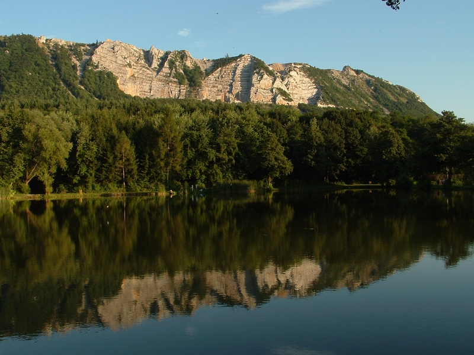

Meghívó a Teljesítménytúrázók Társasága 2020. évi megismételt közgyűlésére Időpontja: 2020. szeptember 28. hétfő 19:00 Helyszíne: TTT klubhelyiség. Budapest I. kerület, Attila út 2. (pincehelyiség), bejárat a villamossínek felől, a Tabáni Spartacus feliratú ajtónál. Szeretettel várjuk tagjainkat!
Kedves TTT tagok és érdeklődők! Amennyiben a járványügyi korlátozások is engedik majd, a TTT klubnapjait folytatjuk 2020. szeptemberől, és továbbra is kéthetente tartjuk hétfőnként. Időpontok: 2020. 09.07, 09.21, 09.28 (TTT megismételt közgyűlés!), 10.12, 10.26, ... Az idő és a helyszín változatlan: hétfő, 19:00-21:00 között, BP. I. ker. Attila u. 2., bejárat a villamossínek felől, a Tabáni Spartacus pince-klubhelyisége.
Tisztelt Sporttársak! 2020. január 1-től az alábbi Hit Pajzsa / Területi Honvédelmi Klub túramozgalmak lesznek teljesíthetőek.
A TTT 2020-ban is megrendezi a Budapest Kupa teljesítménytúra mozgalmat. Budapest Kupa 2020 A kupafüzet az első kupa túrán a január 4-i BUÉK-on lesz kapható 7 órától. Később a további túrákon, a január 5-i Budapest Kupa díjkiosztón, és a TTT klubnapokon keresd! Ára 1500 Ft túrákon, rendezőktől, vagy a TTT-től megvásárolva. (A névre szóló kupa + oklevél díjazást is tartalmazza sikeres teljesítés esetén!)
A teljesítménytúrázóknak egész évben, akár induló-érkező-áthaladó túrán vesz részt, az itiner bemutatásával 10%-os kedvezményt biztosítunk a főtt ételeinkre, ajánlatainkra a Szépjuhászné büfében, és a Mint a Mókus fenn a fán nevü újonnan nyíló büfénkben (a Budakeszi úthoz közelebbi épület) április 20.-tól lángosainkra!
Bükki-hegység
Bükki Nemzeti Park
| 1 | 2 | 3 |